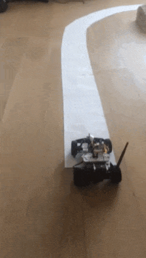

How to build small self driving car?
My recent side project is a building small self driving car with
my friend Filip.
There is fair amount of people doing similar projects on the internet, there
are even folks who race these things.
If you are interested, you could do it too - and I'm sure you'd learn a lot.



* Idea *
The most important element of this project is the car control loop:
-
On board of the car there is forward facing RasPi camera.
-
The image stream is sent to another computer,
which streams steering commands back:
"go forward", "stop", "turn left", etc.
-
Steering commands are issued in one of two ways:
-
Human input, where you steer the car in racing video game fashion.
-
Self-driving algorithm, which tries to guess what would a human do
based on current video frame.
To enable all of this, pieces of various software infrastructure and harware
are necessary. In the text below I will explain how we figured out all these
details and hopefully convey that it was a lot of fun.
* Before the first car *
The whole story started when I finally had time to learn some electronics.
I have always wanted to understand it, as it delivers such exceptional
amounts of value and - in my book - is as close to magic as it gets.
It is so good:
- has light-hearted vibe about it,
- teaches you the practical basics via small projects:
- how to solder,
- how to use multimeter
- is exceptionally easy-to-read.
It lacks the proper theory build-up, so you will have to read up on that
somewhere else if you are interested, but for the car project it should be
sufficient. After some lazy evenings with soldering iron I was able to reverse
engineer and debug basic electronic circuits such as this "astable
multivibrator", to use the proper name:
* The first car era *
Armed with knowledge of rudiments of electronics, it was time to reverse
engineer how an RC car works. As I generally had little idea what I was doing,
I have decided to get cheapest one I could find so I wouldn't be too wasteful
if I broke it while disassembling it. The cheapest one I could find was this
little marvel:
which I have bought in Dutch bargain store Action.nl, new, for below 5 euro.
Deconstructing it, you just cannot help wondering how
simple and elegantly designed it is.
It truly amazes me that for under 5 Euro per unit
people are able to design, fabricate, package, ship
and sell this toy.
It is possible mostly due to amusingly "to the point", "brutalist"
design, where most of elements are right on their tolerances
and wanted effects are achieved in the simplest possible way.
This approach is best showcased by the design of the front wheels
steering system, which I will describe below.
Coming back to the self-driving project, when we pop the body
of the frame, we see this:
Luckily for our project,
this construction can be adapted to our needs in a straightforward fashion.
In the center we see the logic PCB.
There are three pairs of red & black wires attached to the PCB:
- a pair feeding power from the battery pack
- another pair sending power to the back motor, which movese car forward and backward
- one more pair sending power to the front wheel steering system
When logic board receives radio inputs, it (more-or-less) connects
the battery wires with the engine wires and the car moves.
You can see for yourself - if you directly connect the pair from the battery to
the pair coming from one of engines (front or back engine), you see that the
wheels move in wanted directions. So if we substitute the current logic board
with our custom RasPi based logic board that controls connection between
battery and engines based on instructions that we control by code, we would be
able to drive-by-code.
Warning
As Raspberry Pi has some General Purpose Input / Output (GPIO) pins, that
generally it is tempting to try to hook up the engine directly to RasPi.
This is a very bad idea, which will destroy your RasPi.
Thus, we need to implement a hardware engine controller which based
on signals from Raspi will drive the motors
You can buy motor controller for raspi or be thrifty, and implement own. I
have chosen to follow
this tutorial and it worked.
Actually, I have learned soon that the tutorial contains a small error.
Can't drive two motors as shown
Read the chip factsheet, fixed the bug.
Can control car completely from raspi.
Construction
Implemented a basic remote control system that sends driving command over TCP
socket. Not sure about how much power Rpi needs, bought a really big power
pack for mobile phone. When it comes to joining stuff together, a lot of
ziptie engineering. Thanks roadkill!
Fail - too heavy
That one was way 2 heavy. Bought a way lighter battery with less capactiy.
We were really lucky about the Pokemon Go craze, as it meant a lot of cheap
mobile battery packs.
Camera
A lot of trial and error. First followed
this
implementation, then followd where it was taken from - picamera recipes.
Measuring latency takes both hands.
Remote control
Remote control
first tried TCP
then tried UDP
Second car
I learned at this point that some of more advanced RC cars use more
refined servo-style motor at front. These use PWM pulse width modulation
and need a special hardware controller.
Luckily this one was not that expensive, 20-30 euro so still has simplified
steering with linear engine driving the front wheel, as tested by most direct
of methods.
Cleaned up the control module a bit and fit it into slightly
tighter package.
Cleaned up the control module a bit and fit it into slightly
tighter package.
Added high quality camera holder.
Show vid/black_is_fast
Machine learning
Idea was to do Nvidia paper, seen it used at Udacity
self driving car nanodegree and in comma.ai paper.
Did a bit data gathering, 2 sessions of around hour.
Started off with gathering one big track, around 10 meters
around the whole house.
Trained a neural net like in the Nvidia paper.
It didn't work.
Then decided to simplify the problem to one turn.
Gathered a lot of data another time.
Didn't work!
Annotated the data manually again to control for dynamic problems.
Still didn't work!
Cast to greyscale.
Implemented data augmentation based on brigthness and contrast.
It worked.
Lessons
* be patient and persistent
* need a bit of money


{kind=link}
{kind=link}
{kind=link}
{kind=link}
{kind=link}
{kind=link}
{kind=link}
{kind=link}
{kind=link}
{kind=link}
{kind=link}